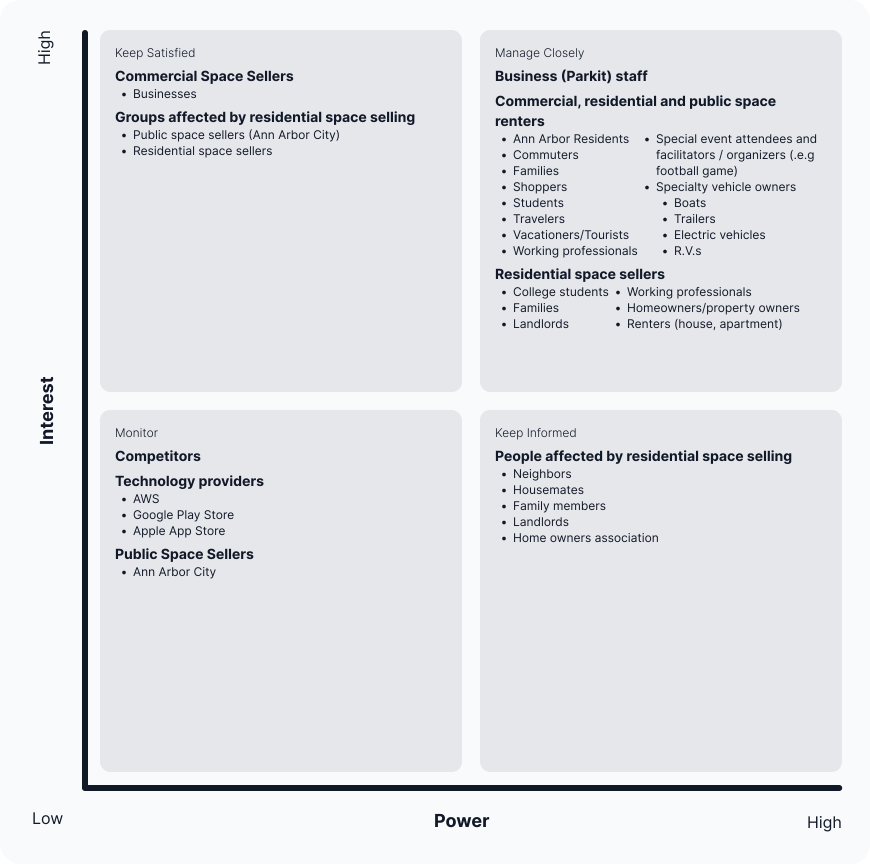
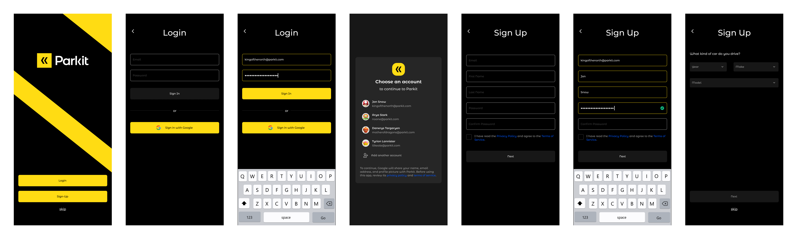

-
The Problem
-
Ann Arbor parking is much more expensive and difficult to find than it should be. Especially in crowded areas and during popular events such as football games, residents can spend a lot of time driving around looking for parking spaces, which wastes time and causes distress and confusion.

Outcome
Created a prototype of a mobile application that would allow users to list and rent residential parking spaces.
Client
Unsolicited tool for Ann Arbor residents
Type
Product Development, UX Research, UX Design
Date
September - December 2022
Roles
UX Researcher, UX Designer, Product Developer
Tools
Figma, Jira, Qualtrics
The Goal
-
Myself and two other team members proposed and created a project that aimed to be realistically implementable and have a profitable and realistic business model. Our primary goal was to improve the parking situation of Ann Arbor by addressing its problems. We were interested in creating a mutually beneficial exchange between residential parking space owners and potential renters to alleviate some of the challenges with parking in Ann Arbor.
-

Home Screen
Available Spaces
Research
Throughout our project, our team utilized numerous UX research methods to investigate how to design and create a fair platform that addresses user needs properly. We chose to incorporate methodologies that would allow us to hear and understand what our target user group felt about various topics surrounding Ann Arbor, parking preferences, concerns, and other feelings. Given our resource constraints and COVID-19, we chose to address the following questions throughout our research.
Research Questions
-
What factors influence parking behavior the most?
What are the most common situations that require locating/using paid parking?
Are there any parking frustrations present in Ann Arbor?
If parking frustrations exist, what are the most important contributing factors to parking frustrations?
What attitudes are associated with the idea of renting out a parking space to someone else in exchange for money?
What is people's willingness to use a service to find parking spaces?
-
User Groups
We identified two main user groups for Parkit: Drivers within Ann Arbor and Ann Arbor Residents & Businesses. Ann Arbor drivers are users that can be identified as 'Renters' or 'Guests', with the ability to browse parking spaces, locate parking amenities, and reserve parking spaces Ann Arbor Residents and Businesses, also known as 'Sellers' and 'Hosts,' can use Parkit as a platform for Ann Arbor residents to list, rent, and purchase residential spaces.
-
Competitive Analysis
-
All the nine competitors for Parkit we evaluated using a competitive analysis met a specific and sometimes niche need for their customers. They had some of the features we were looking to include in Parkit, but none of them entirely address the parking problem we are aiming to solve in the way Parkit could, indicating that the project we have proposed is unique. All the competitors we evaluated but Uber and Spin focused on selling users parking spaces. Apart from the Neighbor platform, these competitors (Gas Buddy, Plug Share, Spot Hero, Parkstash, Spot Angels, Air Garage) all seemed to struggle with user interface problems and a lack of users and spaces listed on the platforms.
-
There be a single platform that acts as a central informational hub for all matters related to locating and reserving study spaces: a platform that meets general and niche needs for a wide range of users will increase the supply of both buyers and sellers on the platform, resulting in an increase in the platforms value for both buyers and sellers.
-
Competitor Analysis
-
Stakeholder Analysis
-
We identified three key groups that would need to be managed closely for our project:
-
-
Business staff
-
Commercial, residential and public space renters
-
Residential space sellers
-
-
Our project focused on the space buyers and sellers. Business staff were out of scope because there were no employees or additional team members to manage outside of our class project group.
-

Stakeholder Analysis
-
Surveys
Through our survey, we were interested to learn general prctices and beliefs of potential users, specifically users with users who had access to a vehicle.
Key findings included:
-
Most people park in Ann Arbor weekly (besides their residence)
Most parked in a parking lot, followed by structures and meters
People did not always have a choice of where they parked
Price, convenience, location, and availability were top factors of choosing parking
Everyone had to work or go to class in person at least some of the time
Most difficult part: finding a spot, affording a spot
Easiest part: fitting vehicle in spot
Overwhelming use of navigation tools
Majority of people do not use any parking tools, but would be interested
Majority felt cost “could be better”
Majority of people limit instances of paying for parking, and park at less convenient spots to save money
Top things to improve: availability, followed by price
Design
Color
The primary brand color used was a yellow hue with hex code #FFDC13, that we named “Sulfur.” Secondary colors include gray, red and green colors, named carbon, ruby and emerald. The use of the gray and yellow colors were to give the system a “dark mode” appearance as well as look like a parking space with the black asphalt and yellow parking lines.
Typeface
The typeface used was Montserrat Alternates, a modification of the clean and modern sans-serif Montserrat typeface chosen for its unique attributes suggesting momentum.
Logo
The logo consists of two arrows (chevrons) in a box, to look like a parking sign. This logomark was inspired by creating the “k” in the logotype with the chevron glyph. The typeface used in “Parkit” text is Montserrat Alternates. We selected this typeface for the logo because of the geometric counters and the forward directionality of the “t” character.
-
Parkit Logos
Prototying
A “master flow” was created to outline the overall flow of logging into the Parkit app, searching for a parking space, reserving a space and then navigating to a space. Once the master flow was created, detailed flows from each of the steps in the master flow were created to prepare for the design process. Wireframes were created from each of the detailed individual user flows, with were then turned into medium and then high fidelity prototypes.
-
Low Fidelity Login User Flow
-

Mid Fidelity Login User Flow
-
High Fidelity Login User Flow
-
Final Design
Our final design is composed of a high-fidelity interactive prototype built in Figma. Designed with the intention of simulating the ideal path of the user:
- Parkit Mockup
-
Login Screen
Home Screen

Search Screen
Search Results

Space Details
Reservation Details